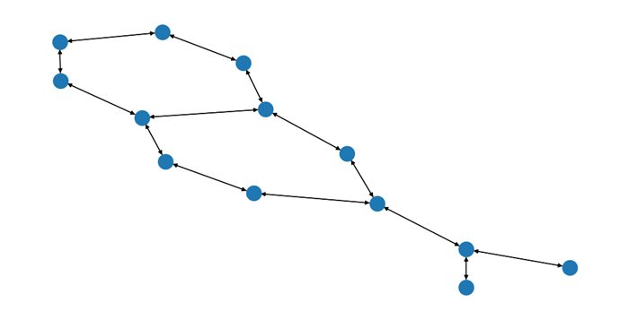
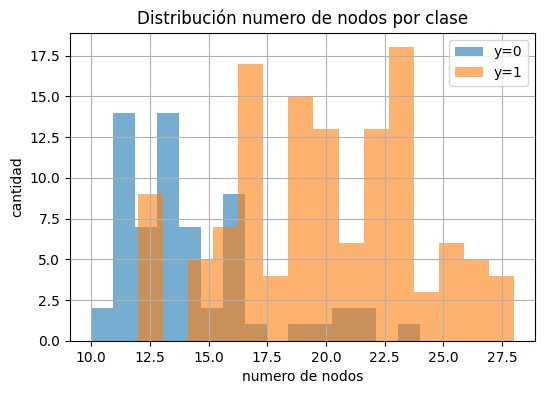
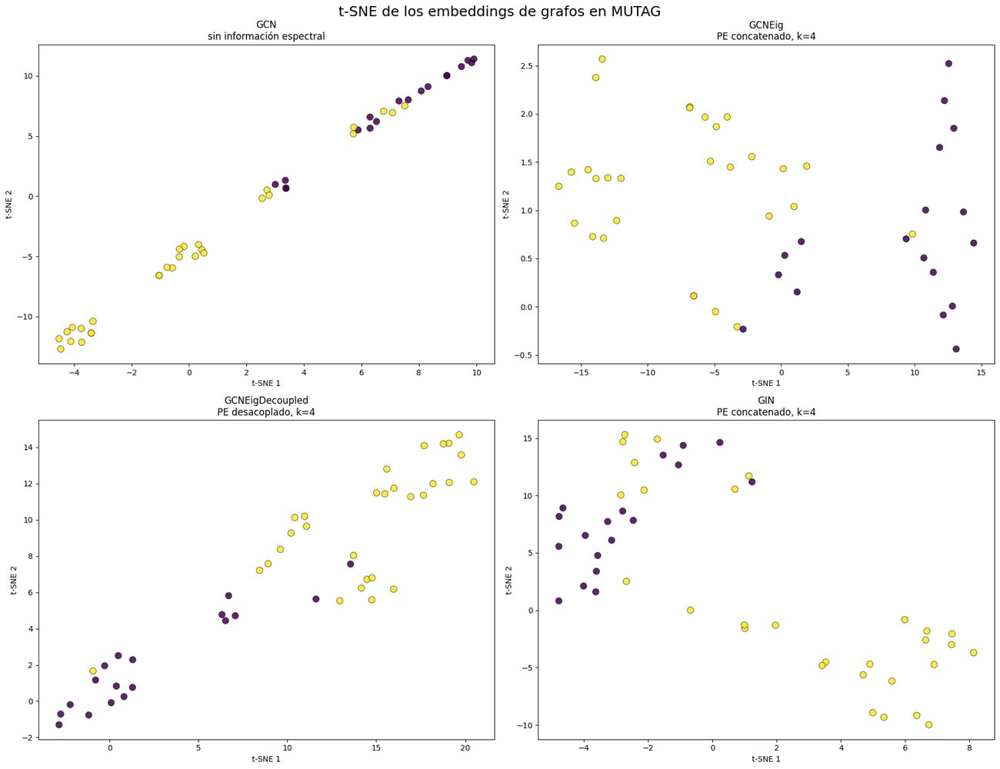

Clasificación de grafos con GNN
Una molécula, una proteína o una red social se pueden representar como un grafo. Estudio si añadir información espectral, los autovectores del Laplaciano como codificación posicional, ayuda a una GCN a clasificar grafos completos.
- Benchmarks
- MUTAG · PROTEINS · ENZYMES · IMDB-BINARY · REDDIT-BINARY
- Modelos
- GCN · GCNEig · GCNEigDecoupled · GIN
- Evaluación
- 10 semillas por configuración
- MUTAG
- 74,0 → 80,6 % con codificación espectral
La idea
Una GCN agrega información de los vecinos, pero no sabe «dónde» está cada nodo dentro del grafo. Los primeros k autovectores del Laplaciano dan a cada nodo unas coordenadas estructurales. Comparo dos formas de usarlas: concatenarlas a las características del nodo (GCNEig) o procesarlas por una rama separada (GCNEigDecoupled).
Hice estudios por separado sobre el número de autovectores (k = 2, 4, 8), la capacidad del modelo (32, 64 y 128 unidades) y el tipo de capa (GCN frente a GIN). Comparé los resultados, de forma orientativa, con los de una tesis de referencia.


Resultados en MUTAG
- La codificación espectral mejora claramente a la GCN base: de 74,0 % a 80,6 % de accuracy media con k = 2.
- Más autovectores no garantizan una mejora: k = 2 y k = 8 quedan muy cerca y k = 4 algo por debajo.
- Con 188 grafos, más capacidad no ayuda: 32 unidades dan una media algo mayor y menos variabilidad que 128.
- En GIN la información espectral también ayuda y, sobre todo, reduce mucho la variabilidad entre semillas.
En el resto de benchmarks el efecto depende del dataset: aporta valor en PROTEINS, no mejora de forma clara en ENZYMES (6 clases) y, en IMDB-BINARY y REDDIT-BINARY, donde no hay características de nodo, los autovectores bastan para superar con claridad el azar.

Python · PyTorch Geometric · NetworkX · scikit-learn